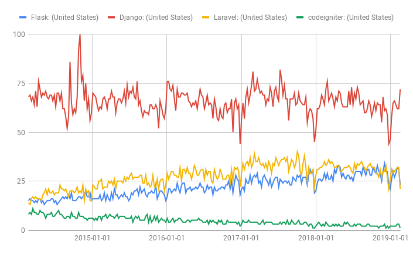

Flask is a Python microframework that is amazingly easy to use and still relatively powerful. But before we get ahead of ourselves, what the heck is a framework?
Think about it this way: If I wanted to build a brick wall from scratch, I would need to first be able to make bricks from clay. I'd also need to know how to mix mortar to the appropriate consistency. I'd also probably need to know a bit about the general physics behind wall building. Etc. Of course, I don't do that. I'd probably get plans off the internet, buy bricks from Mutual Materials or Home Depot or Salmon Bay, I'd also buy mortar mix (cuz mixing real mortar, while cool, is a pain), and all the tools I need to assemble the wall. A framework is kind of like that.
A web framework is a set of classes and functions that have been built for you that you assemble and tweak as you see fit. For instance, you could write a server to listen for HTTP requests. You could also write your own database interface, and so on. But you probably don't need to because one out there already exists that's been tested and optimized for your use case. That's what frameworks do. A framework is a set of tools that manages the common operations of applications freeing up your time to develop within those frameworks the specific features of your application.
There are numerous web frameworks to choose from in many languages, most popular include PHP, Python, Javascript, and Ruby. Some popular ones include Wordpress, Drupal, Laravel and CodeIgniter in PHP, and Django and Flask in Python. Wordpress and Drupal are both CMS' rather than web frameworks, but they are often used to develop applications. They provide great tools for people who don't necessarily want to get their hands dirty writing code. That being said, they are much more limited in terms of what you can do unless you want to write your own modules. The rest are more true to the web framework idea. You will have to code something, but much of your coding will involve using build in functions and classes. Laravel and Django are both full frameworks, whereas CodeIgniter and Flask are micro-frameworks. You will notice that I don't mention any Javascript frameworks. That's in part because we won't touch much Javascript, and in part because that material is covered in the WATS program. We're not going to learn Laravel or CodeIgniter because they are in PHP, we learn Python, and PHP is a strange and ugly language that powers much of the web, but doesn't do much else. Once you've learned developing apps in Python, you could easily take a few weeks and learn how to do it in PHP. Here is a chart comparing their popularity based on Google search trends:
In searching for the top skills that a Python developer ought to have after being familiar with Python, Django and Flask come up as the first and second regularly. We're learning Flask in this class because it's a lot smaller and because it does less of its work automagically. To write a really complicated app in Flask would be more time consuming than it would be in Django because Django is so comprehensive, but we're not building complicated apps, and once you've learned Flask, you can go pick up Django pretty easily. The concepts are the same, but Django has more features built in.
Web frameworks most often follow a model that separates concerns. In other words, the display functionality is separate from the business logic, or the data processing. There are several models that can be used to do this, but the most common is the Model, View, Controller model. This is used by most of the PHP frameworks. Models are responsible for the business logic. So if you're using a database, Models will be responsible for querying the database (inserting and selecting data from the database). Views are responsible for creating the User Interface or front end of your application. Controllers connect the two. For requests that ask for information, the controller calls functions from the models to get data out of the database. They they process that data into a format that can be inserted into a View. They render that view into HTML and send it on its way (sometimes some of this rendering happens in the view, depending on the framework). It is also common for the view layer to be replaced with some Javascript Framework like React, Angular, or view. However, Django, Flask, and Laravel use their own templating languages to create views.
The View component is easy in PHP because you can write HTML directly in a PHP script. It becomes more complicated in Python because you cannot exactly write HTML directly into Python with the same ease. Django and Flask both use a Model, View, Template model. The Model is still responsible for the business logic. The View acts more like a controller in these frameworks and it calls different methods from the Models to get the data out of the database or put it into the database. They also prepare the data to be inserted into a template. A template is basically an HTML file with special tags that the templating engine knows about. We'll go into this in great detail, but in short, a template is an HTML file that has special tags that get populated with data provided by the View component.
If you're totally confused now, that's okay. The key thing to remember is that web frameworks are tools designed to make application development easier. They do this by providing you with prebuilt functions and classes that do the common tasks required by a web application. They free you up to spend your time on what is unique to your app, rather than wasting it on re-inventing the wheel that every web app has. Second, web frameworks separate the business logic from the display in some fashion following some model. Overall, they give us a reasonably solid application design without having to build to much of the foundation of the application.
Before we can install Flask, we need to go over libraries a little bit. If you remember from Concepts in Computing, we spent a good deal of time discussing the value of Python libraries. We can't emphasize this enough: one of the major advantages of Python is all of the amazing, open-source libraries that you have access to. For instance, let's say I want to write a simple app that makes requests to web pages. Well, I could go through all of the work and write up an http client myself from scratch (example below taken from Python Docs), or I could simply use the requests library.
# Option 1: (I couldn't actually get this working
# reliably)
class MySocket:
"""demonstration class only
- coded for clarity, not efficiency
"""
def __init__(self, sock=None):
if sock is None:
self.sock = socket.socket(socket.AF_INET,socket.SOCK_STREAM)
else:
self.sock = sock
def connect(self, host, port):
self.sock.connect((host, port))
def mysend(self, msg):
totalsent = 0
while totalsent < MSGLEN:
sent = self.sock.send(msg[totalsent:])
if sent == 0:
raise RuntimeError("socket connectionbroken")
totalsent = totalsent + sent
def myreceive(self):
chunks = []
bytes_recd = 0
while bytes_recd < MSGLEN:
chunk = self.sock.recv(min(MSGLEN -bytes_recd, 2048))
if chunk == b'':
raise RuntimeError("socket connectionbroken")
chunks.append(chunk)
bytes_recd = bytes_recd + len(chunk)
return b''.join(chunks)
if __name__ == "__main__":
sock = MySocket()
sock.connect("www.python.org", 443)
sock.mysend('GET / HTTPS/1.0\r\n\r\n')
print(sock.myrecv())
# Option 2
import requests
URL = "https://www.python.org"
resp = requests.get(URL)
if resp.status_code == 200:
print(resp.text)
else:
print("Not found")
Obviously, it's easier to use the requests library. In Concepts in Computing, we learned how to install libraries using pip. I suggest you review that. If you install a library with pip and your virtual environment is not activated, then the library gets installed globally. This means it becomes part of the collection of libraries that is accessible in the main environment of your operating system. In other words, these libraries are accessible to any python program not running in a virtual environment. On the other hand, if you install a library with pip, and your virtual environment is activated, then the library is installed in the collection of libraries local to that virtual environment. The image to the right illustrates this. If you recall, virtual environments let us collect our dependencies into a single environment that is isolated from the global environment and other virtual environments. This means you might have many versions of Python installed on your machine along with many collections of libraries. Collecting these into virtual environments allow you to isolate the particular dependencies and libraries for a single project from other projects on your machine. So, as you install the libraries for your Flask project, make sure you've established a virtual environment for that project. Moreover, when we move this project to our live server--heroku--we'll be using a requirements file to get all of our libraries installed on that server.
Your first step, of course, is to set up a directory where your project will live. The last line illustrates which directory we're working in now.
~$ mkdir project
~$ cd project
~/project/$ pwd
~/project/
pwd prints the current working directory. We're currently working in our projects directory that we just created. Now, we need to create our virtual environment. I'm going to name it venv but you can name it whatever you like, as long as you remember what it's called. Notice that I'm using the -p flag to tell the virtualenv program that I will be passing an rgument to specify which version of Python. I also pass it python3 as that argument.
~/project/$ virtualenv venv -p python3
Running virtualenv with interpreter /home/.../anaconda3/bin/python3
Using base prefix '/home/.../anaconda3'
New python executable in /home/.../project/venv/bin/python3
Also creating executable in /home/.../project/venv/bin/python
Installing setuptools, pip, wheel...
done.
~/project/$
I want to take a moment to explain the output of this command, because you should be able to read these kinds of outputs. The first line is my command. The program prints text to tell me the progress. In the first line of output it tells me which python interpreter is being used to create this virtual environment. The second line points out the path to the base directory where Python3 is installed globally. Your output might be different. I use anaconda3 for compatability with some data science libraries. The third line tells us that we're copying the python3 executable in our virtual environment. This is a little bit important because even if you update your python executable in the global environment, the one in this virtual environment will not be touched. The next line creates a second executable in the virtual enviornment so we can call it directly from python instead of having to type out python3. The second to last line lists the python library that are installed by default in the new virtual environment. Setuptools, pip, and wheel are all tools used for installing python libraries. The last line tells us that the process is done.
Finally, we can activate our virtual enviornment and install flask. It's pretty easy...
~/project/$ source venv/bin/activate
(venv) ~/project/$ pip install flask
Collecting flask
Using cached https://files.pythonhosted.org/packages/7f/e7/08578774ed4536d3242b14dacb4696386634607af824ea997202cd0edb4b/Flask-1.0.2-py2.py3-none-any.whl
Collecting click>=5.1 (from flask)
Using cached https://files.pythonhosted.org/packages/fa/37/45185cb5abbc30d7257104c434fe0b07e5a195a6847506c074527aa599ec/Click-7.0-py2.py3-none-any.whl
Collecting itsdangerous>=0.24 (from flask)
Using cached https://files.pythonhosted.org/packages/76/ae/44b03b253d6fade317f32c24d100b3b35c2239807046a4c953c7b89fa49e/itsdangerous-1.1.0-py2.py3-none-any.whl
Collecting Werkzeug>=0.14 (from flask)
Downloading https://files.pythonhosted.org/packages/18/79/84f02539cc181cdbf5ff5a41b9f52cae870b6f632767e43ba6ac70132e92/Werkzeug-0.15.2-py2.py3-none-any.whl (328kB)
100% |████████████████████████████████| 337kB 2.8MB/s
Collecting Jinja2>=2.10 (from flask)
Downloading https://files.pythonhosted.org/packages/1d/e7/fd8b501e7a6dfe492a433deb7b9d833d39ca74916fa8bc63dd1a4947a671/Jinja2-2.10.1-py2.py3-none-any.whl (124kB)
100% |████████████████████████████████| 133kB 3.6MB/s
Collecting MarkupSafe>=0.23 (from Jinja2>=2.10->flask)
Using cached https://files.pythonhosted.org/packages/98/7b/ff284bd8c80654e471b769062a9b43cc5d03e7a615048d96f4619df8d420/MarkupSafe-1.1.1-cp37-cp37m-manylinux1_x86_64.whl
Installing collected packages: click, itsdangerous, Werkzeug, MarkupSafe, Jinja2, flask
Successfully installed Jinja2-2.10.1 MarkupSafe-1.1.1 Werkzeug-0.15.2 click-7.0 flask-1.0.2 itsdangerous-1.1.0
(venv) ~/project/$
That's about all there is to it. You now have Flask installed in this virtual environment. You're ready to start building applications.